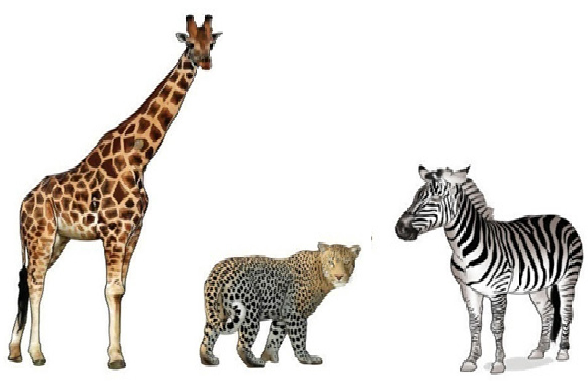

Sunrise and sunset view: Sunrise is the moment when the sun appears in the morning. Sunset is the time when the sun descends below the horizon. Sunrise and sunset are the daily events which are very beautiful to observe. The sun rises from the East and sets in the West at any place on the planet. Sunrise leads to bright skies whereas sunset leads to dark skies. Sunset appears to have much redder skies than sunrise. Figure 1.10 shows the sunrise and sunset.
Fine art manifestation on animals: The decorations found on animal skins, such as strips on a zebra, patterns on a giraffe and spots on a leopard show how art manifests itself in animals. Fine art manifestation in animals can be used by artists as a source of natural patterns when selecting and using colours, to produce beautiful artworks. Figure 1.11 shows art manifestation in animals.
